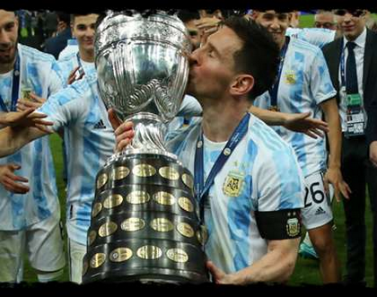
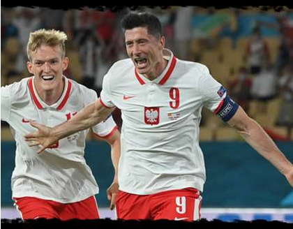
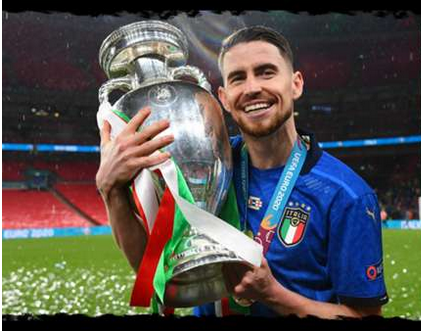
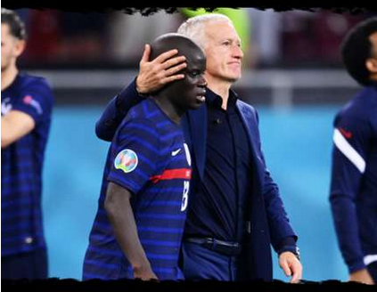
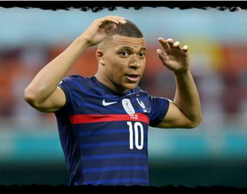
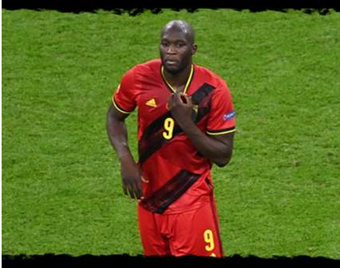
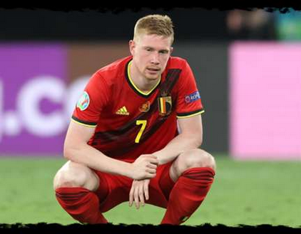
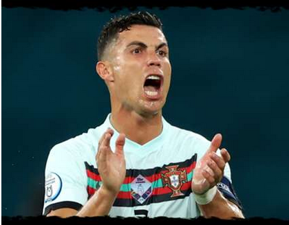
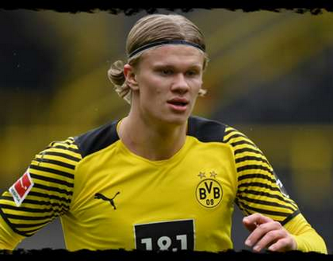

#1 Lionel Messi (Barcelona)
It was the moment millions of football fans have been waiting the best part of 15 years for, as He finally got his hands on a major int'l trophy.
The Player of the Tournament and Golden Boot winner at the Copa, now Ballon d'Or seven is surely going to be on its way this December.

#2 Lewandowski (Bayern)
The player who enjoyed the best individual season in Europe's top leagues, the Golden Shoe winner should now be secure in earning himself a place on the Ballon d'Or podium after a host of other challng failed to make up the distance at the summer tournaments.

#3 Jorginho (Chelsea)
Was Jorginho the best player in Chelsea's run to winning the Champions League? No.
Was Jorginho the best player in Italy's run to winning Euro 2020? Also no.
But did he play a key role in both triumphs? Absolutely.That why he is jumped into ballon dor ranking 3

#4 N'Golo Kante (Chelsea)
Kante's Man-of-the-Match-winning displays in the latter stages of the Champions League might be enough to secure him a place in the top three, but right now it feels as if the Chelsea man is on the outside looking in at the Ballon d'Or podium.

#5 Romelu Lukaku (Inter)
Lukaku does have a realistic shot at the Ballon d'Or podium, particularly if he can lead Belgium to glory at the Nations League finals in October, but the ultimate individual award now seems beyond the Inter striker for another year.

#6 Kylian Mbappe (PSG)
Mbappe may be the cover star of FIFA 22, but a place on the Ballon d'Or podium is now highly unlikely for the PSG forward after a year of memorable Champions League performances but no major trophies.

#7 Kevin De Bruyne (Manchester City)
In 2021: 10 goals, 10 assists. Won Premier League & Carabao Cup.
Aside from the PFA Player of the Year prize, there will be no individual awards for De Bruyne this year, despite continuing to confirm himself as the best creative midfielder on the planet.

#8 Cristiano Ronaldo (Juventus)
Ronaldo may have secured himself the Euro 2020 Golden Boot as he edged out Patrik Schick thanks to a solitary assist, but that will not ease the pain of Portugal's early exit.

#9 Erling Haaland (Borussia Dortmund)
There is a chance that Haaland's performances over the early part of 2021 are lost in the weeds of Euro 2020 and the Copa America, expect him to secure a top 10 finish in the Ballon d'Or race.